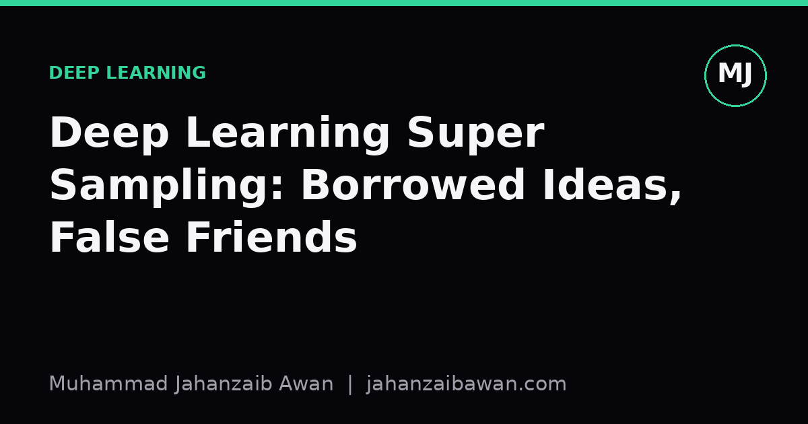
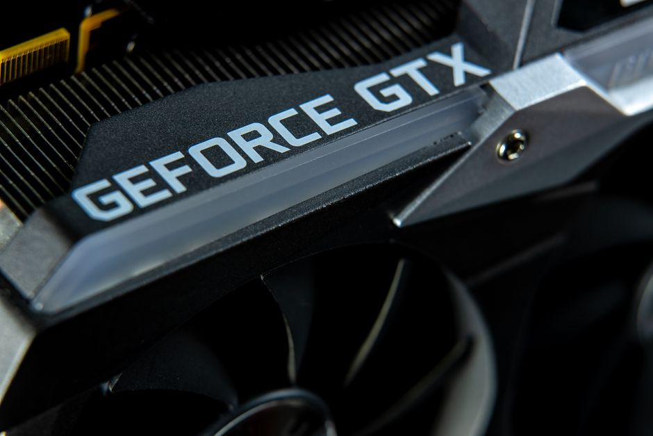

Deep Learning Super Sampling: Borrowed Ideas, False Friends
DLSS looks like magic on a screen, but underneath it is a supervised learning problem with a very particular kind of label. Understanding what it reuses from mainstream deep learning, and what it does not, clarifies both fields.

Why the name causes confusion
Deep learning super sampling, or DLSS, gets lumped into the same mental bucket as chatbots and image generators because it shares the phrase 'deep learning' and because marketing copy loves to imply a single magic ingredient behind every recent advance in computing. That framing does readers a disservice. DLSS is a rendering technique: it takes a frame produced by a video game engine at a lower resolution, sometimes with extra motion information attached, and predicts what that frame would have looked like if it had been rendered natively at a higher resolution. The neural network inside it is doing a narrow, well-specified regression task, not generating novel content from a text prompt or holding a conversation.
I think the confusion is worth untangling properly because it is a useful case study in how a technique can borrow real machinery from one part of deep learning while having essentially nothing to do with another part that happens to share branding. Once you separate the borrowed parts from the unrelated parts, DLSS stops looking mysterious and starts looking like what it is: a carefully engineered instance of supervised image-to-image learning, bolted onto a rendering pipeline with strict latency budgets.
What it genuinely borrows: supervised super-resolution
The core idea DLSS borrows is single-image and video super-resolution, a research area that predates modern generative models by a long way. The setup is simple to state: you have pairs of images, a low-resolution version and a high-resolution ground truth, and you train a convolutional network to map one to the other by minimising a pixel-level or perceptual loss. In a game engine, generating that training data is actually easier than in the real world, because you can render the exact same scene at both a cheap resolution and an expensive one, with pixel-perfect alignment, as many times as you like. There is no messy camera noise or ambiguous blur kernel to estimate; you control the ground truth entirely.
This is where the real deep learning content lives: convolutional feature extraction, residual connections to help the network learn a correction rather than reconstructing an image from nothing, and loss functions that balance raw pixel accuracy against perceptual sharpness. Say a game renders natively at 1080p but DLSS is asked to upscale from 540p. The network has seen millions of paired examples of 540p-to-1080p transformations across many scenes, camera angles and lighting conditions during training, so at inference time it is doing a learned, context-aware interpolation rather than a naive bicubic stretch. The practical gain is real: a scene that would cost, say, 30 frames per second at native 1080p might render its low-resolution pass at 60 or more frames per second, with the network reconstructing detail fast enough to roughly double the effective frame rate.
DLSS also borrows temporal modelling from video processing, feeding in motion vectors and previous frames so the network can accumulate detail over time rather than reconstructing each frame in isolation. This is the same family of idea used in video denoising and video super-resolution research: treat a sequence as correlated data, not a pile of independent images. That temporal reuse is precisely why DLSS can produce sharper results than single-frame upscaling methods, and it is a genuinely borrowed, well-established idea from the broader deep learning for video literature.

What it has nothing to do with
Where the comparison breaks down is anything involving generation of novel content, autoregressive sequence modelling, or large-scale pretraining on internet-scale uncurated corpora. DLSS is not doing anything resembling what a large language model does when it predicts the next token in a sentence, and it is not doing anything resembling what a diffusion model does when it synthesises an image from pure noise and a text description. There is no open-ended creativity involved; the target output is fixed and known during training, because it is simply the native-resolution render of the same frame. The task is closer to compression artefact removal than to invention.
It also has nothing to do with the kind of emergent reasoning behaviour people discuss around large transformer models. DLSS networks are comparatively small and specialised, trained and run with hard real-time constraints, typically needing to execute in a few milliseconds per frame on dedicated hardware. There is no chain of reasoning, no retrieval of external knowledge, no few-shot adaptation to a new task at inference time. If anything, the honest comparison is to classic signal processing: it is a learned filter, admittedly a very good one, sitting in the same conceptual slot that handcrafted upscaling algorithms used to occupy.
This distinction matters practically because it shapes how you should evaluate and trust the technique. A language model's failure mode is a plausible-sounding falsehood; a super-sampling network's failure mode is a visual artefact, a smeared edge, or a flickering detail between frames, which you can catch with pixel-wise metrics and human perceptual studies on held-out scenes the network never trained on. The evaluation discipline that matters here is leakage-aware: if your test scenes share assets, textures or camera paths with training scenes, your reported quality gains are inflated, exactly as they would be in any other supervised learning benchmark.
The practical takeaway
If you are trying to reason about DLSS, or explain it to someone else, the cleanest mental model is: paired supervised regression, borrowed temporal video modelling, deployed under strict latency constraints, evaluated with image quality metrics on disjoint test scenes. Strip away the branding and it sits comfortably next to decades of super-resolution research rather than next to generative chat or text-to-image systems. The shared phrase 'deep learning' tells you almost nothing about shared mechanics.
The broader lesson generalises well beyond graphics. Whenever a new product claims to use deep learning, it is worth asking three concrete questions: what exactly is the labelled pair being learned, how was the test set kept separate from training, and what does a failure actually look like. Answering those three questions for DLSS reveals a mature, well-evaluated engineering technique with a clear training signal. Asking the same questions of a system that cannot answer them clearly is usually a sign the marketing has outpaced the method.